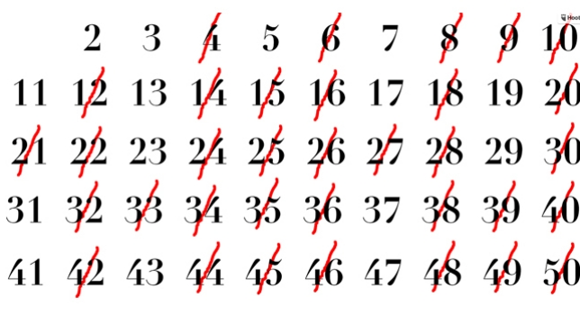
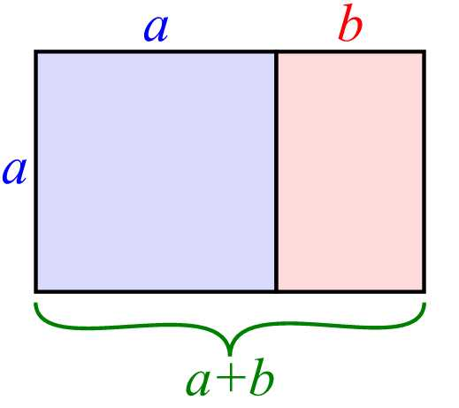
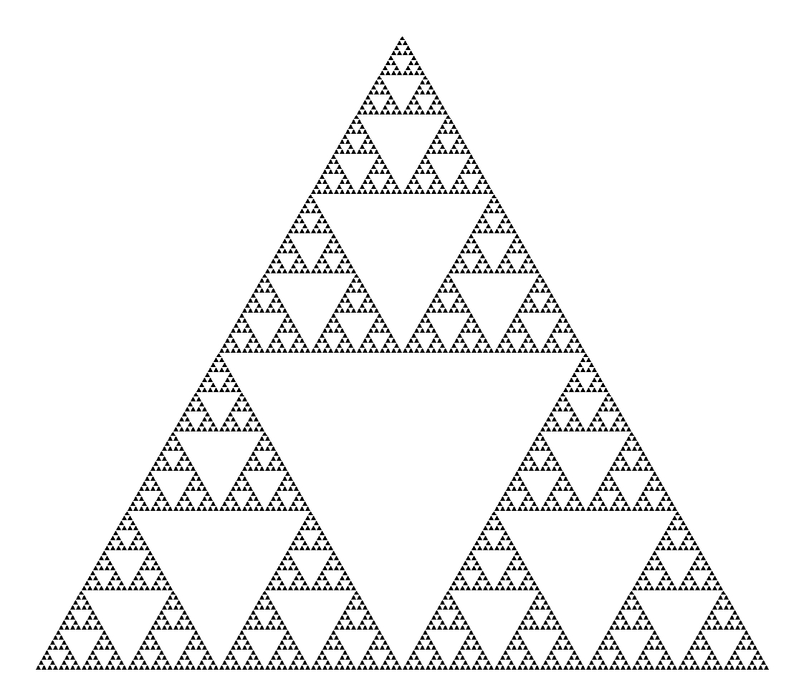

|  | Los números primos, que llevan fascinando a los matemáticos desde su descubrimiento, se usan hoy como técnicas de cifrado (algo de lo que ya os hablamos). Imagina un número absurdamente grande, algo como: 3.527.075.438.238.295.822.083.471.097.193.579.384.912.841.084. 108.562.041.958.239 Ahora supón que este número es el producto de dos números primos, y que solo descubriéndolos tendrás acceso a, por ejemplo, mi base de datos. El cálculo es extraordinariamente laborioso, incluso para un ordenador. Este sistema criptográfico se llama RSA y fue empleado por Estados Unidos y Rusia durante la Guerra Fría. El cálculo de números primos sigue siendo un reto matemático hoy en día. En 2013, un matemático estadounidense encontró el número primo más grandes calculado hasta ahora. Tiene 17 millones de dígitos, así que entiende que no lo copiemos aquí. |
|  | También llamado número de oro, es un número irracional cuyo valor aproximado es 1’618033… Se simboliza con la letra griega Fi (φ) y expresa la proporción entre dos fragmentos de una recta. La proporción áurea se representa con este rectángulo: SimilarGoldenRectangles.svg Este rectángulo respeta las proporción áurea. Si dibujas un cuadrado a partir de su lado mas pequeño (a) y lo eliminas, el rectángulo resultante (coloreado en rosa) sigue respetando la proporción áurea. Lo llamativo de esta proporción es que aparece en multitud de elementos de la naturaleza; está en los pétalos de las flores, en las hojas de un tallo y en los caracoles. Muchos artistas, fascinados por este misterioso número, han reflejado las proporciones áureas en sus cuadros. Es el caso de Dalí y su 'Semitaza gigante volante, con anexo inexplicable de cinco metros de longitud'. |
|  | Un fractal es un objeto cuya estructura se repite a distintas escalas. Fue formulado por el matemático Benoit Mandelbrot, conocido sobre todo por su investigación del llamado conjunto de Mandelbrot. Existen (aproximaciones a) fractales en la naturaleza, como los copos de nieve o las líneas costeras. De hecho, fue precisamente la costa de Gran Bretaña la que empleó Mandelbrot en uno de sus más populares artículos sobre fractales, como ya contamos. El matemático descubrió que el perímetro de Gran Bretaña cambiaba sustancialmente en función de la unidad de medida elegida. Cuanto más pequeña era la escala de medida elegida, mayor era el perímetro obtenido. Era como si el perímetro de Gran Bretaña fuese infinito (cosa que probablemente encantó a los políticos de la época). Hoy estamos bastante seguros de que Gran Bretaña es finita, pero este juego matemático sirvió a Mandelbrot para afirmar que existe un comportamiento fractal en las costas. |